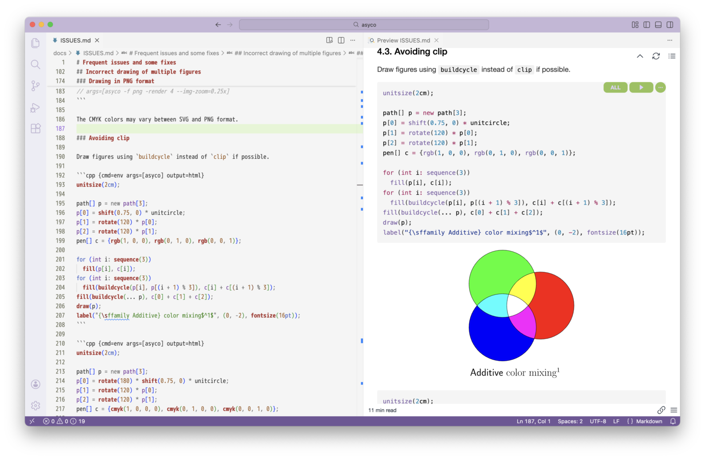
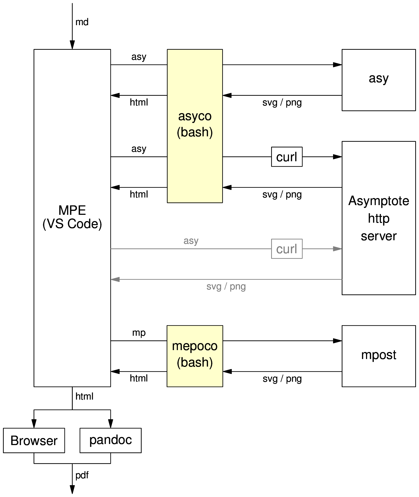

With asyco, you can easily embed figures written in the Asymptote language into a Markdown document. Embedding the figures uses the code chunk feature of Markdown Preview Enhanced (MPE), an extension for Visual Studio Code (VS Code). Use mepoco for figures written in the MetaPost language.

The Markdown document can be converted to a PDF file through a browser or pandoc. asyco and mepoco are wrapper bash scripts that write a graphics output file from asy or mpost to the character output (the standard output).

See INSTALL.md.
Open a Markdown document in VS Code. Write and run MPE code chunks calling asyco or mepoco.
In the options of a code chunk:
cpp (which has syntax similar to Asymptote) or to metafont (which has syntax similar to MetaPost) as neededcmd to envargs to asyco or mepoco and add their options, if any, to argsoutput to htmlIn the following example, the option -M 1mm for asyco is added to args to set a 1mm margin around a figure.
```cpp {cmd=env args=[asyco -M 1mm] output=html}
draw(scale(1cm) * unitcircle); // Asymptote code here
```
Replace asyco in args with mepoco for figures in MetaPost. Set the syntax highlighting language to metafont as needed. In the following example, the -F option for mepoco is also specified to add beginfig(0); and endfig; before and after MetaPost code.
```metafont {cmd=env args=[mepoco -F -M 1mm] output=html}
```
Preview the document with Open Preview to the Side in VS Code. Run the code chunk with Run Code Chunk ( ▶︎ button) or Run All Code Chunks ( ALL button).
Choose Open in Browser from the shortcut (contextual) menu in the preview. Create a PDF file by printing in the browser. You can also choose Export > HTML from the shortcut menu to create an HTML file that can then be converted to a PDF file with the pandoc command.
The first line of an MPE code chunk has the following format.
```lang {cmd=command args=[arg1 arg2 ...] output=format ...}
For example, it will be as follows.
```cpp {cmd=env args=[asyco -f png --render 4] output=html}
You can also set args as follows.
```cpp {cmd=env args=["asyco", "-f", "png", "--render", "4"] output=html}
The main options of a code chunk are described below:
langasy) and MetaPost (mp) is not available in VS Code and MPE. However, you can set the language that has similar syntax. Use cpp for Asymptote and metafont for MetaPost. See ISSUES.md for details.cmdenv command. Setting env is recommended considering document compatibility with Windows, even if asyco or mepoco can be used on macOS or Linux.argsasyco or mepoco as the first argument and add their options if any.outputhtml in most cases. Use none to hide the output. Use text to check the output. The default value is text.hideidid=Fig-1, which can be abbreviated as #Fig-1.continuecontinue=Fig-1 references the code chunk whose identifier is Fig-1, and simple continue references the last code chunk.-f {svg|png}svg for SVG format and png for PNG format. The default value is svg.-o PREFIXPREFIX. mepoco does not allow you to include directories in PREFIX. The output file is saved.-A {L|C|R|N}L Left, C Center, R Right, and N No alignment. You can also use the value of the justify-content property in CSS (Cascading Style Sheets). The default value is C.-K-M MARGINMARGIN around a figure. With mepoco, you can add a margin only when the code does not contain beginfig and endfig, which are added with the -F option. The default value is 0, which means no margin.--alt=TEXTTEXT.--cd=DIRDIR.--clip-prefix=PREFIXPREFIX before the ID of clipPath. The prefix is used to avoid collisions of the ID. The default value is an empty string, which means adding nothing.--cmd=PATHasy or mpost located in PATH for a specific version.--dothide.hide), which is used to avoid the MPE issue of the code chunk hide option.--img-zoom=ZOOMZOOM. Appending x to a number multiplies the number by 4/3. The default value is 1x for asyco and 1 for mepoco to align the size of figures in SVG format and in PNG format.--no-text--silentasyco. Remove figure numbers and font information from text output for mepoco.Additionally, the following options are available if specified as the first argument: -h, --help (show usage and exit), --version (show version information and exit), and -n (exit immediately).
--remoteasy command.--server=SERVERSERVER. The default value is asymptote.ualberta.ca:10007.-Fbeginfig(0); and endfig; before and after MetaPost code.-Uupmpost and uplatex for Unicode labels.Other options are passed to asy or mpost. For this behavior, short options cannot be combined (use -K -A N instead of -KA N, for example). Also, a short option and its argument must be separated by spaces (use -A N instead of -AN, for example).
You can set the environment variables below in the initialization file of your login shell, such as ~/.bash_profile. On Windows, you must set the variables in the Windows environment variables.
You can set default options for asyco or mepoco with the following variables.
ASYCO_OPTSasyco.MEPOCO_OPTSmepoco.Default options can be confirmed at the last line of the usage (by the --help option of asyco or mepoco). Command line options will override the default options.
You can set the background color of text output from asyco or mepoco with the following variables. The variables are used in common for asyco and mepoco, even if the variable names start with ASYCO_.
ASYCO_OUT_BG_COLasy or mpost).ASYCO_ERR_BG_COLasy or mpost).Settings of CSS properties by classes are effective throughout a document. Later settings override earlier ones.
The classes below are used in common for asyco and mepoco, even if the class names start with asyco-.
asyco-fig-A N is not specified).asyco-outasy or mpost).asyco-errasy or mpost).With the Asymptote http server, you can embed figures written in Asymptote into a Markdown document without the local asy command. Specify the --remote option for asyco. The default Asymptote http server asymptote.ualberta.ca:10007 is used if you do not set the server with the --server option.
```cpp {cmd=env args=[asyco --remote] output=html}
draw(scale(1cm) * unitcircle); // Asymptote code here
```
Specify the option -f png for asyco to draw a figure as a PNG image. The value of the code chunk option output must be html, not png. In the following example, image resolution and display magnification are changed with -render 4 --img-zoom=0.25x and the image is saved to fig.png with -o fig.
```cpp {cmd=env args=[asyco -f png -render 4 --img-zoom=0.25x -o fig] output=html}
draw(scale(1cm) * unitcircle); // Asymptote code here
```
You can include and execute files of Asymptote or MetaPost with @import of MPE.
### Asymptote
@import "rgb.asy" {as=cpp cmd=env args=[asyco] output=html}
### MetaPost
@import "rgb.mp" {as=metafont cmd=env args=[mepoco] output=html}
With the local asy command, warning messages or error messages may appear.
```cpp {cmd=env args=[asyco] output=html}
size(1cm);
dot("$O$", (0, 0));
```
In the above example, the following waning messages appear.
: warning [unbounded]: x scaling in picture unbounded
: warning [unbounded]: y scaling in picture unbounded
The warning messages can be suppressed with the --silent option of asyco. The warning messages can also be suppressed individually with the -nowarn option of asy; use -nowarn unbounded for the above example.
With the Asymptote http server, error messages may appear but warning messages will not.
Even if the output of the command is text only, the value of the code chunk option output must be html, not text.
```metafont {cmd=env args=[mepoco] output=html}
```
If the output from asy is text only, asyco is not required.
```cpp {cmd=asy}
write(inverse((0, 0, 1, 1, 2, 4)) * (8, 26)); // You will get "(3,5)".
```
If you put multiple figures written in MetaPost in one code chunk, the figure output is in the order of the argument of beginfig. However, the text output is in the order of the appearance in the code. See ISSUES for the alignment of multiple figures.
```metafont {cmd=env args=[mepoco] output=html}
```
You can configure asyco by setting environment variables in the initialization file of your login shell, such as ~/.bash_profile. On Windows, you must set the variables in the Windows environment variables.
# ~/.bash_profile
export ASYCO_OPTS="--cmd /Library/TeX/texbin/"
export ASYCO_OUT_BG_COL="#EEF"
The first line sets the path of asy. For example, /Library/TeX/texbin/asy is used even if /opt/homebrew/bin/asy is found first in the command search path (PATH). The second line sets the background color of the text output to light blue (#EEF).
In the following example, the background color of the output (the standard error) is set to transparent using the asyco-err class (.asyco-err) when showing the version and environment settings of asy, which is called from asyco. To override the light red (#FDD) setting by asyco, !important is used.
<style> .asyco-err { background-color: transparent !important; } </style>
```cpp {cmd=env args=[asyco -version] output=html}
// args=[asyco -version]
```
```cpp {cmd=env args=[asyco -environment] output=html}
// args=[asyco -environment]
```
asycat, you can generate Markdown with code and figures side by side from Asymptote or MetaPost files. See asycat.md for details.(c) 2025-2026 aelata
This software is licensed under the MIT No attribution (MIT-0) License. However, this License does not apply to any files with the .html or .js extension.
https://opensource.org/license/mit-0